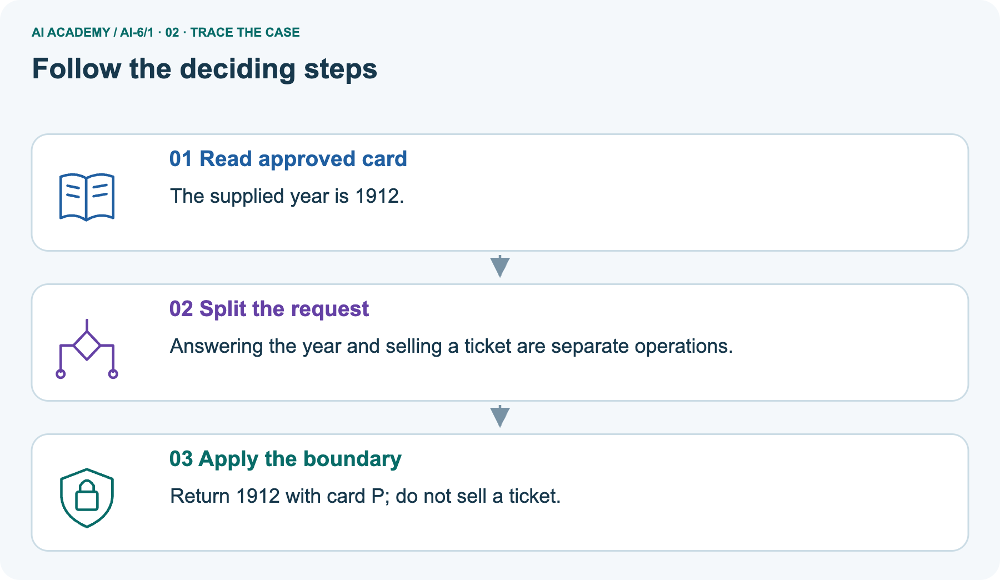
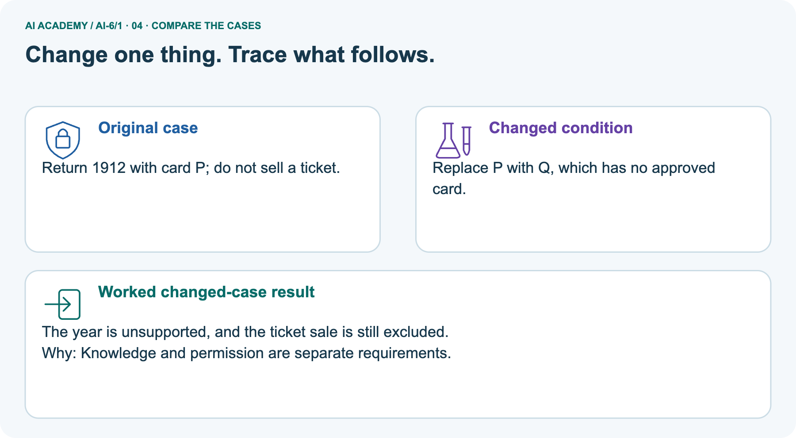
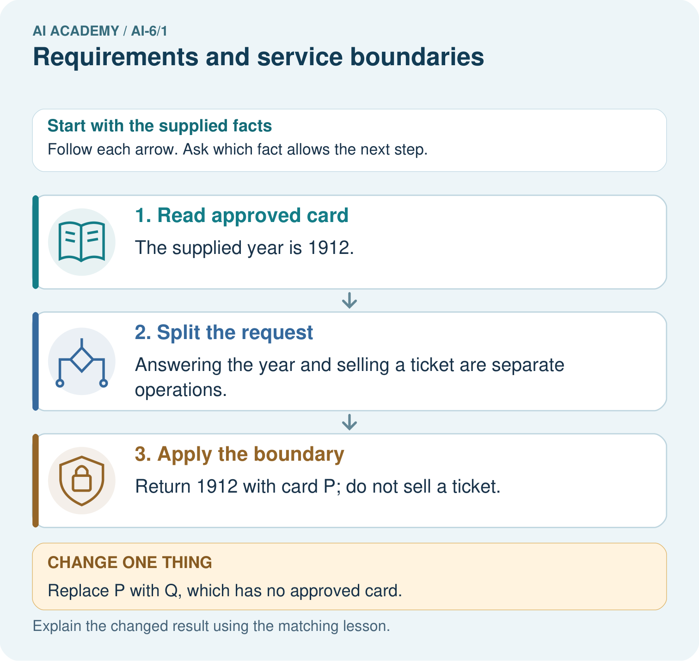
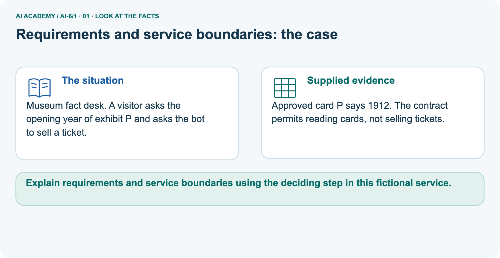
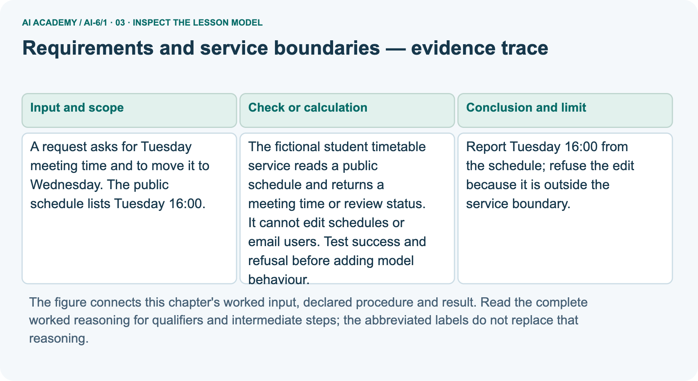
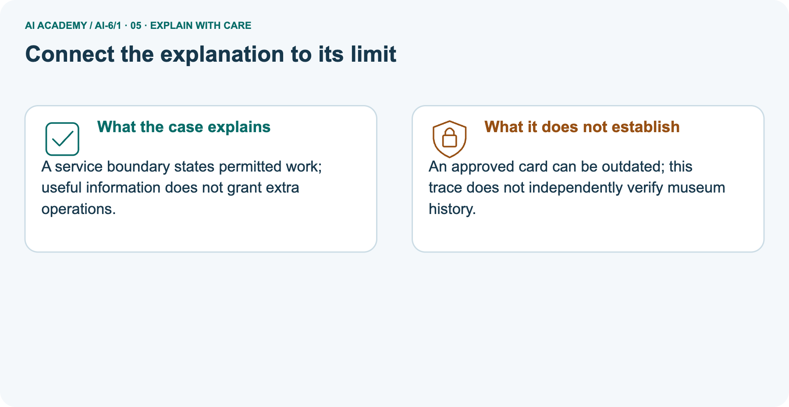
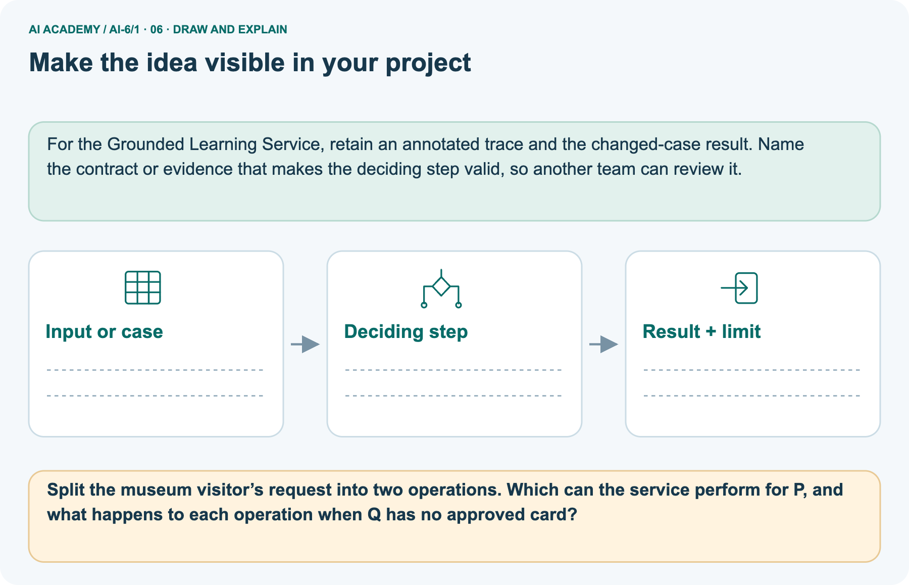

AI Academy · Level 6 · Grade 11 · Week 1 · Student lesson
Requirements and service boundaries
Learn to understand, design, build, test and explain AI systems responsibly.
Project: Grounded Learning Service
THE CONNECTED WEEK
Split the request. Check the boundary. Use the approved evidence.
Trace a read-only service with supported answers, missing-record review and excluded actions.
Keep one habit: Timetable contract → complete decision trace → museum picture → probe table → local simulation → independent inventory.
Main lesson · Section 1
Build a service that knows what it may do
Separate supported information, missing evidence and excluded actions.
Learning goals
I can explain the mechanism and terminology of requirements and service boundaries.
I can apply the stated procedure to a new case with a traceable result.
I can identify an assumption or limitation and design a revealing follow-up.
Retrieve traceable evidence
Close your notes first. A rough first answer helps us choose the right starting point; it is not a score for your ability.
Without opening the old lesson, explain one key idea from Neural network experiment defense. Give an example and a mistake that the idea helps you avoid.
After trying, check the relevant lesson or ask your teacher. Change the part of your explanation that the evidence shows was wrong.
Prerequisite and starting response
Recall AI 5 exit evidence, tested Python programs, APIs, structured data, version control and basic system diagrams.. Explain why a recorded result needs its input conditions and evidence source before it can support a claim.
End goal
Explain requirements and service boundaries using the deciding step in this fictional service.
Earlier wording, alternatives and picture transcripts
Your learning target
Remember before reading
This week you will practise:
Explain the mechanism and terminology of requirements and service boundaries
Apply the stated procedure to a new case with a traceable result
Identify an assumption or limitation and design a revealing follow-up
Retrieve what you already know
This week’s end goal
Main lesson · Section 2
Turn a broad idea into an observable service contract
Evidence and permission answer different questions.
Start with the two-part student request
Imagine a school timetable desk with a public printed schedule. A student asks, “When is Tuesday’s meeting, and can you move it to Wednesday?” These are two operations: reading a time and changing a schedule. The desk can answer the supported read while declining the edit. A useful answer does not create permission to change the source. We will model this contract locally, with invented records and no live account.
Define the service boundary
A service boundary states who can request what, what data may be read and which actions are outside scope. Requirements must be observable.
Complete classroom contract
| Contract question | This classroom service |
|---|---|
| Who requests? | A fictional student; identity/authentication is not implemented here |
| Approved evidence | Supplied public-schedule-classroom-v1: Tuesday → 16:00 |
| Allowed operation | Read a meeting time from that supplied schedule |
| Excluded operations | Move/edit meetings; send email; any other action |
| Read with no supplied entry | Return review status, without inventing a time |
| Mixed request | Return a separate outcome for each operation |
| Observable requirements | Supported read names its source; excluded actions do not execute; schedule stays unchanged |
Record supplied and missing facts
Earlier wording, alternatives and picture transcripts
Begin by writing the question the procedure is intended to answer. Identify the information already supplied, the information it will produce and the information still missing.
These are constructed classroom examples; they do not require live accounts, private records or an external service. Do not treat a plausible explanation as a measured outcome.
Main lesson · Section 3
Trace permission first, then look up allowed information
A request can contain both an answerable read and an excluded action.
Original timetable service definition
The fictional student timetable service reads a public schedule and returns a meeting time or review status. It cannot edit schedules or email users. Test success and refusal before adding model behaviour.
Complete three-outcome trace
Split the request before deciding each operation
Explain the checks and evidence limits
Follow the checks in order. First name the operation. If it is excluded, stop that operation without changing the schedule. If a read is allowed, look for the required approved record. Return the supplied time with its source when present; otherwise return review. In this local exercise review is a status to record, not proof that a person has checked or resolved the case.
The time has no supplied date or time zone, so do not present it as a verified real appointment.
Before applying the procedure, write its units, denominator or decision boundary where relevant. A partner should be able to repeat each step using the same inputs.
If a required input is absent or violates the stated contract, record that condition explicitly instead of quietly replacing it with a convenient value.
Connect the picture to the deciding step
Point to the input, the deciding step and the result in this week’s visual. Explain the same step in ordinary words. A picture helps when you can say what each part represents.
Earlier wording, alternatives and picture transcripts
Requirements and service boundaries — evidence trace
Connect the picture and the explanation
Main lesson · Section 4
Change one part of the request and predict each outcome
Keep the read-only boundary fixed.
Current task and response
A request asks for Tuesday meeting time and to move it to Wednesday. The public schedule lists Tuesday 16:00. Show the intermediate steps and give the conclusion with its scope.
Predict the missing-card picture
Change: Replace P with Q, which has no approved card.
Check after predicting
Prediction: The year is unsupported, and the ticket sale is still excluded.
Reason: Knowledge and permission are separate requirements.
Earlier wording, alternatives and picture transcripts
Compare a familiar case with a changed case
Change one thing in the pictured case
Main lesson · Section 6
Compare the timetable with a museum fact desk
Use the same distinction between evidence and permission in a different setting.
Complete main request and answer
A request asks for Tuesday meeting time and to move it to Wednesday. The public schedule lists Tuesday 16:00.
Report Tuesday 16:00 from the schedule; refuse the edit because it is outside the service boundary.
Explain the scope of this trace
Compare the intermediate evidence with the final statement. Explain why each number or decision follows from the stated inputs.
The conclusion belongs to this scenario and procedure; changing the inputs, evaluation population or authority can change what it establishes. Retain the raw record so a later revision can be compared honestly.
Separate museum case and all givens
Museum fact desk. A visitor asks the opening year of exhibit P and asks the bot to sell a ticket.
Approved card P says 1912. The contract permits reading cards, not selling tickets.
The main case is a timetable; the picture is a separate museum fact desk. Approved card P supplies year 1912. The contract allows reading cards but excludes selling tickets. Return the supplied year with card P and decline the ticket sale. For Q with no approved card, the year is unsupported and needs review; selling a ticket remains excluded.
No real museum history, ticket system or human review outcome has been checked in this example.
Trace card lookup and excluded sale



Read the picture one step at a time
A service boundary states permitted work; useful information does not grant extra operations.
Predict replacing P with missing-card Q
Change one thing: Replace P with Q, which has no approved card. Predict the result before checking the explanation. What remains the same?
Check after predicting



Explain both operations and the history limit
An approved card can be outdated; this trace does not independently verify museum history.
Read the labelled picture: Split the museum visitor’s request into two operations. Which can the service perform for P, and what happens to each operation when Q has no approved card?
Earlier wording, alternatives and picture transcripts
Learn from the worked case
Cover the result before checking it. Say what is given, choose the procedure, and follow one step at a time. Then uncover the result and explain your first mismatch. Ask why a step is allowed, not only what number it produces.
A pictorial worked case: Requirements and service boundaries
The facts we will use



Why this result follows
What this example does not establish
Main lesson · Section 7
Diagnose a wrong answer, a missing record and an excluded action
These conditions need different responses.
Core boundary qualification and error analysis
A helpful answer does not grant an operation that the service contract excludes.
A useful check asks what would make the reasoning fail. Distinguish a failure to execute the declared procedure from a weakness in the procedure itself.
The first may require a correction; the second requires an explicitly revised method and new evidence. Preserve unsuccessful cases so an improved result cannot hide the original problem.
Complete normal, missing and boundary probes
| Complete probe | Expected outcome and reason |
|---|---|
| Read Tuesday; then move it | Answer 16:00 from source; reject move; schedule unchanged |
| Read Wednesday, no supplied entry | review; do not invent a time |
| Send email | out_of_scope; no email function exists in the simulation |
| Unknown structured operation | out_of_scope under the explicit read-only allowlist |
| Read action with missing day field | Invalid structured request; complete the input before a lookup |
| A newer conflicting schedule appears | Current one-source exercise supplies no conflict-resolution rule; review/version the contract before extending it |
| Return review status | Records an unresolved case; no reviewed decision is implied |
Guided explanation and repair
A report omits this qualification: A helpful answer does not grant an operation that the service contract excludes. Explain how omitting it could change a reader's interpretation, and write an accurate replacement.
Earlier wording, alternatives and picture transcripts
Locate the earliest unsupported step
Main lesson · Section 8
Practise an operation-by-operation explanation
Name the request, approved evidence, decision and outcome.
Current explanation and guided scope check
Explain the weekly mechanism in your own words. Use the worked scenario to name its input, decision rule and output.
Supported W2 record
Use workbook W2 for the connected example “Requirements and service boundaries”. First fill the input and rule boxes. Try the middle steps before asking for a hint. After a hint, try the next step yourself.
| Plan | Do | Check |
|---|---|---|
| What is given? Which rule or procedure applies? | Record each intermediate step. | Does the result follow? What remains unknown? |
Explain your trace to a partner. Your partner points to one step to check. Swap roles on the next case. Each person writes their own explanation.
Independent reasoning check
Use the worked case for Requirements and service boundaries. Proposed explanation: “The worked result establishes every future case”. Decide whether this explanation is supported.
Point to the step or supplied fact that decides; explain your repair if needed.
Answer on your own before discussion. If you are unsure, say which step you need help with.
Museum picture response
Split the museum visitor’s request into two operations. Which can the service perform for P, and what happens to each operation when Q has no approved card?
Reserve the independent inventory case
This is supported practice. Keep the separately named independent case for an attempt before feedback.
Earlier wording, alternatives and picture transcripts
Practise with less help: Trace the worked case
Check your reasoning
Explain the picture
Main lesson · Section 9
Run a complete local boundary simulation
Check the outcome and the unchanged source, not only a polite refusal sentence.
Current worked-request investigation
A request asks for Tuesday meeting time and to move it to Wednesday. The public schedule lists Tuesday 16:00. Show the intermediate steps and give the conclusion with its scope.
Complete runnable dispatcher and invariant checks
"""Local deterministic simulation of a read-only timetable service."""
from copy import deepcopy
SCHEDULE={'Tuesday':'16:00'}
SOURCE='public-schedule-classroom-v1'
def dispatch(operations,schedule):
if not isinstance(operations,list) or not operations:
raise ValueError('Need a nonempty list of structured operations')
results=[]
for operation in operations:
if not isinstance(operation,dict) or not isinstance(operation.get('action'),str):
raise ValueError('Every operation needs a string action')
action=operation['action']
# The contract only authorizes reads; requests cannot extend this allowlist.
if action!='read_schedule':
results.append({'action':action,'status':'out_of_scope'})
continue
day=operation.get('day')
if not isinstance(day,str) or not day:
raise ValueError('A schedule read needs a nonempty day string')
if day not in schedule:
results.append({'action':action,'day':day,'status':'review',
'reason':'No supplied schedule entry'})
else:
results.append({'action':action,'day':day,'status':'answered',
'time':schedule[day],'source':SOURCE})
return results
before=deepcopy(SCHEDULE)
request=[{'action':'read_schedule','day':'Tuesday'},
{'action':'move_schedule','day':'Tuesday','new_day':'Wednesday'}]
result=dispatch(request,SCHEDULE)
assert result[0]['time']=='16:00' and result[1]['status']=='out_of_scope'
assert dispatch([{'action':'read_schedule','day':'Wednesday'}],SCHEDULE)[0]['status']=='review'
assert dispatch([{'action':'email_user'}],SCHEDULE)[0]['status']=='out_of_scope'
assert SCHEDULE==before
print('Mixed request:',result)
print('Missing Wednesday:',dispatch([{'action':'read_schedule','day':'Wednesday'}],SCHEDULE))
print('Snapshot unchanged:',SCHEDULE==before)
print('Simulation only: no natural-language parser, network, authentication, email, edit or reviewer outcome.')
Expected cases and simulation limits
Predict a separate status for each operation before running or tracing. The simulation consumes structured action dictionaries, not natural-language requests. Check answered Tuesday, excluded move/email, and review for missing Wednesday. Compare the schedule with its saved snapshot to confirm no edit occurred. Missing required fields are invalid input, distinct from a valid lookup with no record.
The example has no network, authentication, natural-language parser, actual editing, email delivery or completed human review. It demonstrates a deterministic contract before adding model behaviour; it does not prove a deployed service is secure or correct.
Evidence ledger and reflection
| Record | Your evidence |
|---|---|
| Given input and fixed rule | |
| Prediction before checking | |
| Actual result, or “not run” | |
| First mismatch and one explanation | |
| Boundary or missing input and expected response |
On paper, trace the supplied procedure. If code is provided, predict before running it in a local practice file. Never write an expected answer as though it were an observed run.
Before trying: what do I expect, and why? While trying: which step could first go wrong? Afterwards: what did I actually observe, and what should change? Keep “not run” if you only traced the procedure.
Earlier wording, alternatives and picture transcripts
Predict, investigate and preserve the evidence
Plan → try → check
Main lesson · Section 14
Try alone: apply the boundary to a read-only inventory
Use the new source and operations before opening feedback.
Complete independent inventory case
A read-only inventory service is asked to list item A and delete item B. Inventory says A is available. Trace permitted work.
First attempt and support record
Attempt this case before feedback. Record any help. Earlier examples below are further practice; a case already practised with feedback cannot establish fresh transfer.
Feedback after trying
Attempt the independent case before hints. Record whether you worked alone, used a hint or followed a model. After feedback, fix the first unsupported step and explain why it changed.
A later check uses a changed case, not a copied answer.
Earlier wording, alternatives and picture transcripts
Independent case: Apply a new case independently
Attempt this without hints
A read-only inventory service is asked to list item A and delete item B. Inventory says A is available. Trace permitted work.
Record support used: none, hint or teacher explanation. After feedback, a different case is needed to demonstrate independence.
Use feedback to improve
Main lesson · Section 11
Save a small service contract and its acceptance cases
Keep inputs, approved source, excluded actions and observed results together.
Project task and artifact
Add a labelled requirements and service boundaries evidence sheet to Grounded Learning Service. Show how you can explain the mechanism and terminology of requirements and service boundaries.
Use the supplied fictional case and keep its inputs, intermediate steps, calculation or prediction, and limitation. Connect this record to last week’s record; a matching answer without a trace is insufficient.
| Project evidence | Record |
|---|---|
| Component and version | |
| Inputs permitted at prediction time | |
| Trace and comparison with earlier work | |
| Failure, limit and human review |
Actual run or trace and limitations
For the Grounded Learning Service, retain an annotated trace and the changed-case result. Name the contract or evidence that makes the deciding step valid, so another team can review it.
Earlier wording, alternatives and picture transcripts
Evidence for your project
Main lesson · Section 16
Finish with a supported answer and an enforced boundary
A correct response should say what was done and what remains unresolved.
Retrieve and explain
Close your notes. Explain this goal in your own words: Explain the mechanism and terminology of requirements and service boundaries
Plan a changed-case return
If you are unsure, return to the worked picture and explain one arrow. If you are ready, change an input or assumption and justify your prediction.
Save your workbook evidence. At the next review, try a different case before opening your old answer.
Reference bank and extra practice
Choose the reference that helps your next step.
Reference · Use service vocabulary precisely
Reference · Section 5
Reference · Use service vocabulary precisely
Connect each term to an input, operation, evidence source or outcome.
Vocabulary and your explanation
| Word | Meaning |
|---|---|
| Service boundary | The declared inputs, data and operations of a service |
| Acceptance criterion | An observable requirement |
| Out of scope | Not authorised by this service contract |
Extra challenge · Explain a stronger case
Reference · Section 10
Extra challenge · Explain a stronger case
Choose the next challenge after the main route.
Explain,repair and extend
Explain the weekly mechanism in your own words. Use the worked scenario to name its input, decision rule and output.
A report omits this qualification: A helpful answer does not grant an operation that the service contract excludes. Explain how omitting it could change a reader's interpretation, and write an accurate replacement.
For the worked scenario, propose one additional case that could reveal a failure, describe its expected outcome before running it, and explain what would need to remain fixed for a fair comparison.
Do not reuse W4 as a new final test after receiving feedback.
Explain → apply → challenge
Reference · Check the service reasoning and its limits
Reference · Section 12
Reference · Check the service reasoning and its limits
Use after practice; keep the selected independent case for its first attempt.
Current explanation and response
Complete the supported workbook tasks before attempting W4 independently. Record any hints or help used. After feedback, use the teacher's fresh retry rather than copying the earlier answer.
For a project, select a relevant new case, predict the outcome from the declared rule and preserve the result alongside any revision.
For the worked scenario, propose one additional case that could reveal a failure, describe its expected outcome before running it, and explain what would need to remain fixed for a fair comparison.
Do not reuse W4 as a new final test after receiving feedback.
Extra practice · Revisit the complete trace
Reference · Section 13
Extra practice · Revisit the complete trace
Predict before reading the supplied steps.
Complete trace and evidence
Complete evidence record
Requirements and service boundaries — evidence trace
Follow the input through the stated procedure to its result. Cover the result first, predict it, then explain every intermediate step. The text/table accompanies the figure so the example can be read without colour.
Reference · The earlier route checklist
Reference · Section 15
Reference · The earlier route checklist
Use one main route rather than repeating the lesson.
Targets,route and first prediction
Start with this question: Museum fact desk. A visitor asks the opening year of exhibit P and asks the bot to sell a ticket.
| By the end, I can | How I will show it |
|---|---|
| Explain the mechanism and terminology of requirements and service boundaries | Explain the deciding step, show a trace or test, and state one limit. |
| Apply the stated procedure to a new case with a traceable result | Explain the deciding step, show a trace or test, and state one limit. |
| Identify an assumption or limitation and design a revealing follow-up | Explain the deciding step, show a trace or test, and state one limit. |
Remember → watch and explain → try with help → investigate → try independently → keep project evidence. Your teacher may spread this lesson across several classes.
Keep your first prediction. Compare it with what the evidence shows and explain any change.
Extra practice · Predict,check and repair
Reference · Section 17
Extra practice · Predict,check and repair
Keep supported feedback separate from the independent case.
First supported question and optional hint
Museum fact desk. A visitor asks the opening year of exhibit P and asks the bot to sell a ticket.
Which labelled step matches this detail? Return 1912 with card P; do not sell a ticket.
1. Read approved card
2. Split the request
3. Apply the boundary
Hint if needed: Read the steps in the pictorial case. Match the supplied detail to the stage that performs or records it.
Practice 1: explain the deciding evidence
Check after the first attempt
After your attempt, compare with the supported explanation: Apply the boundary Return 1912 with card P; do not sell a ticket. A service boundary states permitted work; useful information does not grant extra operations.
Changed-case question and optional hint
Changed-case practice: Replace P with Q, which has no approved card. Which conclusion is supported by the supplied facts?
1. The year is unsupported, and the ticket sale is still excluded.
2. This one example guarantees correct results for every future input.
3. We can decide the result without examining the changed input or the procedure.
Hint if needed: Use the changed condition and the deciding step in the pictorial trace. The answer must say what follows from those facts.
Practice 2: explain the deciding evidence
Check after the changed attempt
After your attempt, compare with the supported explanation: The year is unsupported, and the ticket sale is still excluded. Knowledge and permission are separate requirements.
Repair and retain the record
Review Neural network experiment defense (ai-5/36). Goal: Defend a network experiment using traceable evidence. Short practice: Calculate both weighted terms, z and ReLU output.
Predict the changed second input and explain why 0.2 cannot be called 20% accuracy.. Return to this week and explain what you changed.
Use Download completed work in the hosted lesson to export your answers, reflections, practice feedback and code-run evidence. Open the HTML copy to read or print it.
Drafts stay in this browser when storage is available; clear drafts on a shared device.
Earlier wording, alternatives and picture transcripts
Use this supported practice once, in the browser or on paper. Keep the reserved independent assessment for a separate first attempt before teacher feedback.
Repair a missing building block
Keep your completed work
Reference · Six-picture concept journey
Reference · Section 18
Reference · Six-picture concept journey
Choose the picture that supports the current explanation.
01. Requirements and service boundaries: the case



Museum fact desk. A visitor asks the opening year of exhibit P and asks the bot to sell a ticket. Supplied facts: Approved card P says 1912. The contract permits reading cards, not selling tickets.
Point to the given fact that matters most. Explain why it matters.
02. Follow the deciding steps
Read approved card: The supplied year is 1912. → Split the request: Answering the year and selling a ticket are separate operations. → Apply the boundary: Return 1912 with card P; do not sell a ticket.
Point to each numbered stage and explain which recorded input it uses.
03. Requirements and service boundaries — evidence trace



Requirements and service boundaries — evidence trace. A request asks for Tuesday meeting time and to move it to Wednesday.
The public schedule lists Tuesday 16:00. | The fictional student timetable service reads a public schedule and returns a meeting time or review status. It cannot edit schedules or email users.
Test success and refusal before adding model behaviour. | Report Tuesday 16:00 from the schedule; refuse the edit because it is outside the service boundary.
Read the labels and values. Explain the relationship the model shows.
04. Change one thing. Trace what follows.
Original case: Return 1912 with card P; do not sell a ticket. Changed condition: Replace P with Q, which has no approved card. Expected result: The year is unsupported, and the ticket sale is still excluded.
Reason: Knowledge and permission are separate requirements.
Predict before checking the worked changed-case result. Name what changed and what the supplied facts allow you to conclude.
05. Connect the explanation to its limit



A service boundary states permitted work; useful information does not grant extra operations. Limit: An approved card can be outdated; this trace does not independently verify museum history.
Explain the case, then point to a limit on the claim.
06. Make the idea visible in your project



For the Grounded Learning Service, retain an annotated trace and the changed-case result. Name the contract or evidence that makes the deciding step valid, so another team can review it.
Draw your input, deciding step, result and limit. Supported question: Split the museum visitor’s request into two operations. Which can the service perform for P, and what happens to each operation when Q has no approved card?
Draw your project trace and justify the deciding step using evidence.